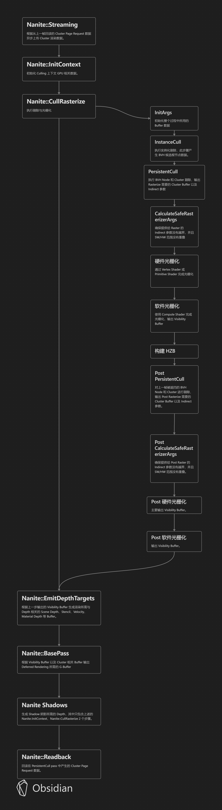

#Blog
Nanite原理
前提
复杂场景绘制的瓶颈通常有两个：（1）每次Draw Call带来的CPU端验证及CPU-GPU之间的通信开销；（2）由于剔除不够精确导致的overdraw和由此带来的GPU计算资源的浪费；近年来渲染技术优化往往也都是围绕这两个难题:
针对第一个：新一代的图形API，要求开发者自行处理CPU和GPU之间的同步；充分利用多核CPU的优势多线程向GPU提交命令。
针对第二个：减少CPU和GPU之间的数据通讯，诞生了GPU Driven Pipeline。把模型的顶点数据进一步切分为更细粒度的Cluster（或者叫做Meshlet），让每个Cluster的粒度能够更好地适应Vertex Processing阶段的Cache大小，并以Cluster为单位进行各类剔除（Frustum Culling，Occulsion Culling，Backface Culling）

基于Mesh Shader的Pipeline，Cluster剔除成为了顶点处理阶段的一部分，减少没必要的Vertex Buffer Load/Store
硬件光栅化和软件光栅化
传统光栅化硬件设计之初，设想的输入三角形大小是远大于一个像素的。基于这样的设想，硬件光栅化的过程通常是层次式的。以N卡的光栅器为例，一个三角形通常会经历两个阶段的光栅化：Coarse Raster和Fine Raster ， 前者以一个三角形作为输入，以8x8像素为一个块，将三角形光栅化为若干块（你也可以理解成在尺寸为原始FrameBuffer 1/8*1/8大小的FrameBuffer上做了一次粗光栅化）。在这个阶段，借由低分辨率的Z-Buffer，被遮挡的块会被整个剔除，N卡上称之为Z Cull；在Coarse Raster之后，通过Z Cull的块会被送到下一阶段做Fine Raster，最终生成用于着色计算的像素。在Fine Raster阶段，有我们熟悉的Early Z。由于mip-map采样的计算需要，我们必须知道每个像素相邻像素的信息，并利用采样UV的差分作为mip-map采样层级的计算依据。为此，Fine Raster最终输出的并不是一个个像素，而是2x2的小像素块（Pixel Quad）。
对于接近像素大小的三角形来说，硬件光栅化的浪费就很明显了
小三角形由于Pixel Quad造成的光栅化浪费
软光栅化（基于Compute Shader）的确有机会打败硬光栅化。这也正是Nanite的核心优化之一，这一优化使得UE5在小三角形光栅化的效率上提升了3倍。
Visibility Buffer的新渲染管线
基于Visibility Buffer的算法不再单独产生臃肿的G-Buffer，而是以带宽开销更低的Visibility Buffer作为替代，Visibility Buffer通常需要这些信息：
（1）InstanceID，表示当前像素属于哪个Instance（16~24 bits）；
（2）PrimitiveID，表示当前像素属于Instance的哪个三角形（8~16 bits）；
（3）Barycentric Coord，代表当前像素位于三角形内的位置，用重心坐标表示（16 bits）；
（4）Depth Buffer，代表当前像素的深度（16~24 bits）；
（5）MaterialID，表示当前像素属于哪个材质（8~16 bits）；
我们只需要存储大约8~12 Bytes/Pixel即可表示场景中所有几何体的材质信息，同时，我们需要维护一个全局的顶点数据和材质贴图表，表中存储了当前帧所有几何体的顶点数据，以及材质参数和贴图。在光照着色阶段，只需要根据InstanceID和PrimitiveID从全局的Vertex Buffer中索引到相关三角形的信息；进一步地，根据像该素的重心坐标，对Vertex Buffer内的顶点信息（UV，Tangent Space等）进行插值得到逐像素信息；再进一步地，根据MaterialID去索引相关的材质信息，执行贴图采样等操作，并输入到光照计算环节最终完成着色，有时这类方法也被称为Deferred Texturing。
下面是基于G-Buffer的渲染管线流程：

这是基于Visibility-Buffer的渲染管线流程：
Nanite

它的核心思想可以简单拆解为两大部分：顶点处理的优化和像素处理的优化。其中顶点处理的优化主要是GPU Driven Pipeline的思想；像素处理的优化，是在Visibility Buffer思想的基础上，结合软光栅化完成的。

Geometry Representation
View Dependent LOD Transitions

解决LOD Cracks 方法： 将边进行锁住，永远锁住LOD0的边，但是会在变换时候边缘产生大量碎面，造成高频问题。
nanite会生成cluster group ，然后只锁住cluster group的边
多个cluster 生成一个 cluster group ，build的时候重新计算cluster group中的cluster分布，从而保证锁边和优化三角面

如下图所示，多个cluster组成一个cluster group，再重新拆分为多个cluster。
可以看到下面，第一个cluster group在变换到第二个cluster group 后锁边范围均发生改变。
cluster group 在变换LOD时锁边范围会变换掉， 这样避免掉前面LOD变化时候锁边边缘的碎面高频问题。


对于一些微小物体离得很远以后的情况，我们减到最后一级cluster，其实它还是有128个面,还有Imposter atlas的方式处理
Detail of Simplification - QEM

解析下图，多个clusters 通过 METIS库 组合成 cluster group， 通过QEM算法进行减面优化后，重新通过METIS库组合成新的cluster group
Instance Cull && Persistent Cull

每个Nanite Mesh在预处理阶段，会被切成若干Cluster，每个Cluster包含128个三角形，整个Mesh以BVH（Bounding Volume Hierarchy）的形式组织成树状结构，每个叶节点代表一个Cluster。
剔除分两步，包含了视锥剔除和基于HZB的遮挡剔除。其中Instance Cull以Mesh为单位，通过Instance Cull的Mesh会将其BVH的根节点送到Persistent Cull阶段进行层次式的剔除（若某个BVH节点被剔除，则不再处理其子节点）。
每棵BVH树一个单独的线程，也就是一个线程负责一个Nanite Mesh。从而实现Persistent Cull阶段的剔除任务数量映射到Compute Shader的线程数量
由于每个Mesh的复杂度不同，其BVH树的节点数、深度差异很大，并行性很差，Nanite解决这个问题的思路是：设置固定数量的线程，每个线程通过一个全局的FIFO任务队列去取BVH节点进行剔除，若该节点通过了剔除，则把该节点的所有子节点也放进任务队列尾部，然后继续循环从全局队列中取新的节点，直到整个队列为空且不再产生新的节点。这其实是一个多线程并发的经典生产-消费者模式，不同的是，这里的每个线程既充当生产者，又充当消费者。通过这样的模式，Nanite就保证了各个线程之间的处理时长大致相同。

整个剔除阶段分为两个Pass：Main Pass和Post Pass（可以通过控制台变量设置为只有Main Pass）。这两个Pass的逻辑基本是一致的，区别仅仅在于Main Pass遮挡剔除使用的HZB是基于上一帧数据构造的，而Post Pass则是使用Main Pass结束后构建的当前帧的HZB，这样是为了防止上一帧的HZB错误地剔除了某些可见的Mesh。
需要注意的是，Nanite并未使用Mesh Shader，究其原因，一方面是因为Mesh Shader的支持尚未普及；另一方面是由于Nanite使用软光栅化，Mesh Shader的输出仍要写回GPU Buffer再用于软光栅化输入，因此相较于CS的方案并没有太多带宽的节省。

Runtime LOD Selection
LOD Selection Parallel


整个树状的数据结构，error从下往上逐步递增。

内部对整个cluster group 作为一个虚拟节点，整个节点有个error值。


每个cluster group 中的cluster存着自己的error，每个cluster group存该cluster group的error，最底层的cluster的error统一设置为-1，树的全部节点丢到GPU里面坐并行化运算。（空间换时间）
Build BVH for Acceleration of LOD Selection

把每个LOD当作节点组建成新的BVH Tree
对于遍历上述bvh树，官方相当于再开一个线程池，做一个MPMC 进程队列来快速处理
Screen Pixels and Target

根据屏幕比例控制三角形面数（这一步需要TA与美术确定屏幕比与模型面数关系）
Rasterization
在剔除结束之后，每个Cluster会根据其屏幕空间的大小送至不同的光栅器，大三角形和非Nanite Mesh仍然基于硬件光栅化，小三角形基于Compute Shader写成的软光栅化。
- 渲染 3333 个实例，每个实例包含 384 个顶点
- 运行 34821 组compute shader

Nanite的Visibility Buffer为一张R32G32_UINT的贴图(8 Bytes/Pixel)，其中R通道的06 bit存储Triangle ID，731 bit存储Cluster ID，G通道存储32 bit深度：

Cluster ID
Triangle ID
Depth
整个软光栅化的逻辑比较简单：基于扫描线算法，每个Cluster启动一个单独的Compute Shader，在Compute Shader初始阶段计算并缓存所有Clip Space Vertex Positon到shared memory，而后CS中的每个线程读取对应三角形的Index Buffer和变换后的Vertex Position，根据Vertex Position计算出三角形的边，执行背面剔除和小三角形（小于一个像素）剔除，然后利用原子操作完成Z-Test，并将数据写进Visibility Buffer。值得一提的是，为了保证整个软光栅化逻辑的简洁高效，Nanite Mesh不支持带有骨骼动画、材质中包含顶点变换或者Mask的模型。
Emit Targets
为了保证数据结构尽量紧凑，减少读写带宽，所有软光栅化需要的数据都存进了一张Visibility Buffer，但是为了与场景中基于硬件光栅化生成的像素混合，我们最终还是需要将Visibility Buffer中的额外信息写入到统一的Depth/Stencil Buffer以及Motion Vector Buffer当中。这个阶段通常由几个全屏Pass组成：
（1）Emit Scene Depth/Stencil/Nanite Mask/Velocity Buffer，这一步根据最终场景需要的RenderTarget数据，最多输出四个Buffer，其中Nanite Mask用0/1表示当前像素是普通Mesh还是Nanite Mesh（根据Visibility Buffer对应位置的ClusterID得到），对于Nanite Mesh Pixel，将Visibility Buffer中的Depth由UINT转为float写入Scene Depth Buffer，并根据Nanite Mesh是否接受贴花，将贴花对应的Stencil Value写入Scene Stencil Buffer，并根据上一帧位置计算当前像素的Motion Vector写入Velocity Buffer，非Nanite Mesh则直接discard跳过。

Nanite Mask

Velocity Buffer

Scene Depth/Stencil Buffer
（2）Emit Material Depth，这一步将生成一张Material ID Buffer，稍有不同的是，它并未存储在一张UINT类型的贴图，而是将UINT类型的Material ID转为float存储在一张格式为D32S8的Depth/Stencil Target上（稍后我们会解释这么做的理由），理论上最多支持2^32种材质（实际上只有14 bits用于存储Material ID），而Nanite Mask会被写入Stencil Buffer中。

Material Depth Buffer
Classify Materials && Emit G-Buffer

Nanite的材质Shader是在Screen Space执行
Nanite在Base Pass绘制阶段并不是每种材质一个全屏Pass，而是将屏幕空间分成若干8x8的块，比如屏幕大小为800x600，则每种材质绘制时生成100x75个块，每块对应屏幕位置。为了能够整块地剔除，在Emit Targets之后，Nanite会启动一个CS用于统计每个块内包含的Material ID的种类。由于Material ID对应的Depth值预先是经过排序的，所以这个CS会统计每个8x8的块内Material Depth的最大最小值作为Material ID Range存储在一张R32G32_UINT的贴图中：

Material ID Range
有了这张图之后，每种材质在其VS阶段，都会根据自身块的位置去采样这张贴图对应位置的Material ID Range，若当前材质的Material ID处于Range内，则继续执行材质的PS；否则表示当前块内没有像素使用该材质，则整块可以剔除，此时只需将VS的顶点位置设置为NaN，GPU就会将对应的三角形剔除。由于通常一个块内的材质种类不会太多，这种方法可以有效地减少不必要的overdraw。
所以一种材质一个drawcall
在完成了逐块的剔除后，Material Depth Buffer就派上了用场。在Base Pass PS阶段，Material Depth Buffer被设置为Depth/Stencil Target，同时Depth/Stencil Test被打开，Compare Function设置为Equal。只有当前像素的Material ID和待绘制的材质ID相同（Depth Test Pass）且该像素为Nanite Mesh（Stencil Test Pass）时才会真正执行PS，于是借助硬件的Early Z/Stencil我们完成了逐像素的材质ID剔除，整个绘制和剔除的原理见下图：


整个Base Pass分为两部分，首先绘制非Nanite Mesh的G-Buffer，这部分仍然在Object Space执行，和UE4的逻辑一致；之后按照上述流程绘制Nanite Mesh的G-Buffer，其中材质需要的额外VS信息（UV，Normal，Vertex Color等）通过像素的Cluster ID和Triangle ID索引到相应的Vertex Position，并变换到Clip Space，根据Clip Space Vertex Position和当前像素的深度值求出当前像素的重心坐标以及Clip Space Position的梯度（DDX/DDY），将重心坐标和梯度代入各类Vertex Attributes中插值即可得到所有的Vertex Attributes及其梯度（梯度可用于计算采样的Mip Map层级）。

MaterialLayers虽然在MaterialInstances里面，但是不同的Layers组合会产生新的Shader，也就是说继承母材质后只要MaterialInstance修改过MaterialLayer栈，包括MaterialLayer和MaterialLayerBlend，会导致这个材质产生新的Shader。在执行Nanite最后的Emit GBuffer的时候每种材质都会执行一次屏幕空间的后处理
MaterialInstance是可能产生新shader的。出来MaterialLayer，还有一些控制静态分支的参数。比如你在节点连线的时候加了一个静态分支节点，然后用静态参数来控制编译时的分支走向。那在MaterialInstance里修改参数就会导致新的Shader生成
参考
https://zhuanlan.zhihu.com/p/382687738
https://www.elopezr.com/a-macro-view-of-nanite/
https://www.twitch.tv/videos/1044652371
知乎从越大佬